정보처리기사 (2021-08-14 기출문제)
1과목: 소프트웨어 설계
1. 요구사항 검증(Requirements Validation)과 관련한 설명으로 틀린 것은?
- 요구사항이 고객이 정말 원하는 시스템을 제대로 정의하고 있는지 점검하는 과정이다.
- 개발완료 이후에 문제점이 발견될 경우 막대한 재작업 비용이 들 수 있기 때문에 요구사항 검증은 매우 중요하다.
- 요구사항이 실제 요구를 반영하는지, 문서상의 요구사항은 서로 상충되지 않는지 등을 점검한다.
- 요구사항 검증 과정을 통해 모든 요구사항 문제를 발견할 수 있다.
(정답률: 92%)

2. UML 모델에서 한 사물의 명세가 바뀌면 다른사물에 영향을 주며, 일반적으로 한 클래스가다른 클래스를 오퍼레이션의 매개변수로 사용하는 경우에 나타나는 관계는?
- Association
- Dependency
- Realization
- Generalization
(정답률: 65%)
3. 익스트림 프로그래밍 (XP)에 대한 설명으로 틀린 것은?
- 빠른 개발을 위해 테스트를 수행하지 않는다.
- 사용자의 요구사항은 언제든지 변할 수있다.
- 고객과 직접 대면하며 요구사항을 이야기하기 위해 사용자 스토리(User Story)를 활용할 수 있다.
- 기존의 방법론에 비해 실용성(Pragmatism)을 강조한 것이라고 볼 수있다.
(정답률: 91%)
4. 소프트웨어 설계에서 사용되는 대표적인 추상화(Abstraction) 기법이 아닌 것은?
- 자료 추상화
- 제어 추상화
- 과정 추상화
- 강도 추상화
(정답률: 81%)
5. 객체지향 설계에서 정보 은닉(Information Hiding)과 관련한 설명으로 틀린 것은?
- 필요하지 않은 정보는 접근할 수 없도록 하여 한 모듈 또는 하부시스템이 다른 모듈의 구현에 영향을 받지 않게 설계되는것을 의미한다.
- 모듈들 사이의 독립성을 유지시키는 데 도움이 된다.
- 설계에서 은닉되어야 할 기본 정보로는 IP주소와 같은 물리적 코드, 상세 데이터 구조 등이 있다.
- 모듈 내부의 자료 구조와 접근 동작들에만 수정을 국한하기 때문에 요구사항 등변화에 따른 수정이 불가능하다.
(정답률: 84%)
6. 소프트웨어 공학에서 모델링 (Modeling)과 관련한 설명으로 틀린 것은?
- 개발팀이 응용문제를 이해하는 데 도움을 줄 수 있다.
- 유지보수 단계에서만 모델링 기법을 활용한다.
- 개발될 시스템에 대하여 여러 분야의 엔지니어들이 공통된 개념을 공유하는 데 도움을 준다.
- 절차적인 프로그램을 위한 자료흐름도는 프로세스 위주의 모델링 방법이다.
(정답률: 89%)
7. 요구 분석(Requirement Analysis)에 대한 설명으로 틀린 것은?
- 요구 분석은 소프트웨어 개발의 실제적인 첫 단계로 사용자의 요구에 대해 이해하는 단계라 할 수 있다.
- 요구 추출(Requirement Elicitation)은 프로젝트 계획 단계에 정의한 문제의 범위 안에 있는 사용자의 요구를 찾는 단계이다.
- 도메인 분석(Domain Analysis)은 요구에 대한 정보를 수집하고 배경을 분석하여 이를 토대로 모델링을 하게 된다.
- 기능적(Functional) 요구에서 시스템 구축에대한 성능, 보안, 품질, 안정 등에 대한 요구사항을 도출한다.
(정답률: 55%)
8. 클래스 다이어그램의 요소로 다음 설명에 해당하는 용어는?
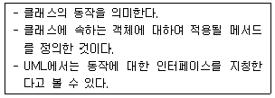
- Instance
- Operation
- Item
- Hiding
(정답률: 69%)
9. 분산 시스템을 위한 마스터-슬레이브(Master-Slave) 아키텍처에 대한 설명으로 틀린 것은?
- 일반적으로 실시간 시스템에서 사용된다.
- 마스터 프로세스는 일반적으로 연산, 통신, 조정을 책임진다.
- 슬레이브 프로세스는 데이터 수집 기능을 수행할 수 없다.
- 마스터 프로세스는 슬레이브 프로세스들을 제어할 수 있다.
(정답률: 80%)
10. 요구 사항 정의 및 분석·설계의 결과물을 표현하기 위한 모델링 과정에서 사용되는 다이어그램(Diagram)이 아닌 것은?
- Data Flow Diagram
- UML Diagram
- E-R Diagram
- AVL Diagram
(정답률: 73%)
11. 객체지향의 주요 개념에 대한 설명으로 틀린 것은?
- 캡슐화는 상위클래스에서 속성이나 연산을 전달받아 새로운 형태의 클래스로 확장하여 사용하는 것을 의미한다.
- 객체는 실세계에 존재하거나 생각할 수 있는 것을 말한다.
- 클래스는 하나 이상의 유사한 객체들을 묶어 공통된 특성을 표현한 것이다.
- 다형성은 상속받은 여러 개의 하위 객체들이 다른 형태의 특성을 갖는 객체로 이용될 수 있는 성질이다.
(정답률: 79%)
12. 사용자 인터페이스(User Interface)에 대한 설명으로 틀린 것은?
- 사용자와 시스템이 정보를 주고받는 상호작용이 잘 이루어지도록 하는 장치나 소프트웨어를 의미한다.
- 편리한 유지보수를 위해 개발자 중심으로 설계되어야 한다.
- 배우기가 용이하고 쉽게 사용할 수 있도록 만들어져야 한다.
- 사용자 요구사항이 UI에 반영될 수 있도록 구성해야 한다.
(정답률: 92%)
13. GoF(Gang of Four) 디자인 패턴과 관련한 설명으로 틀린 것은?
- 디자인 패턴을 목적(Purpose)으로 분류할 때 생성, 구조, 행위로 분류할 수 있다.
- Strategy 패턴은 대표적인 구조 패턴으로 인스턴스를 복제하여 사용하는 구조를 말한다.
- 행위 패턴은 클래스나 객체들이 상호작용하는 방법과 책임을 분산하는 방법을 정의한다.
- Singleton 패턴은 특정 클래스의 인스턴스가 오직 하나임을 보장하고, 이 인스턴스에 대한 접근 방법을 제공한다.
(정답률: 67%)
14. 애자일 개발 방법론과 관련한 설명으로 틀린 것은?
- 빠른 릴리즈를 통해 문제점을 빠르게 파악할 수 있다.
- 정확한 결과 도출을 위해 계획 수립과 문서화에 중점을 둔다.
- 고객과의 의사소통을 중요하게 생각한다.
- 진화하는 요구사항을 수용하는데 적합하다.
(정답률: 88%)
15. 럼바우(Rumbaugh)의 객체지향 분석 기법 중 자료 흐름도(DFD)를 주로 이용하는 것은?
- 기능 모델링
- 동적 모델링
- 객체 모델링
- 정적 모델링
(정답률: 51%)
16. 순차 다이어그램(Sequence Diagram)과 관련한 설명으로 틀린 것은?
- 객체들의 상호 작용을 나타내기 위해 사용한다.
- 시간의 흐름에 따라 객체들이 주고 받는 메시지의 전달 과정을 강조한다.
- 동적 다이어그램보다는 정적 다이어그램에 가깝다.
- 교류 다이어그램(Interaction Diagram)의 한 종류로 볼 수 있다.
(정답률: 77%)
17. 객체지향 분석 기법과 관련한 설명으로 틀린것은?
- 동적 모델링 기법이 사용될 수 있다.
- 기능 중심으로 시스템을 파악하며 순차적인처리가 중요시되는 하향식(Top-down)방식으로 볼 수 있다.
- 데이터와 행위를 하나로 묶어 객체를 정의내리고 추상화시키는 작업이라 할 수 있다.
- 코드 재사용에 의한 프로그램 생산성 향상 및 요구에 따른 시스템의 쉬운 변경이 가능하다.
(정답률: 71%)
18. 대표적으로 DOS 및 Unix 등의 운영체제에서조작을 위해 사용하던 것으로, 정해진 명령문자열을 입력하여 시스템을 조작하는 사용자인터페이스(User Interface)는?
- GUI(Graphical User Interface)
- CLI(Command Line Interface)
- CUI(Cell User Interface)
- MUI(Mobile User Interface)
(정답률: 84%)
19. 분산 시스템에서의 미들웨어 (Middleware)와 관련한 설명으로 틀린 것은?
- 분산 시스템에서 다양한 부분을 관리하고 통신하며 데이터를 교환하게 해주는소프트웨어로 볼 수 있다.
- 위치 투명성(Location Transparency)을 제공한다.
- 분산 시스템의 여러 컴포넌트가 요구하는 재사용가능한 서비스의 구현을 제공한다.
- 애플리케이션과 사용자 사이에서만 분산서비스를 제공한다.
(정답률: 86%)
20. 소프트웨어 아키텍처와 관련한 설명으로 틀린것은?
- 파이프 필터 아키텍처에서 데이터는 파이프를 통해 양방향으로 흐르며, 필터 이동 시 오버헤드가 발생하지 않는다.
- 외부에서 인식할 수 있는 특성이 담긴 소프트웨어의 골격이 되는 기본 구조로 볼수 있다.
- 데이터 중심 아키텍처는 공유 데이터저장소를 통해 접근자 간의 통신이 이루어지므로 각 접근자의 수정과 확장이 용이하다.
- 이해 관계자들의 품질 요구사항을 반영하여 품질 속성을 결정한다.
(정답률: 79%)
2과목: 소프트웨어 개발
21. 테스트를 목적에 따라 분류했을 때,강도(Stress) 테스트에 대한 설명으로 옳은것은?
- 시스템에 고의로 실패를 유도하고 시스템이정상적으로 복귀하는지 테스트한다.
- 시스템에 과다 정보량을 부과하여 과부하 시에도 시스템이 정상적으로 작동되는지를 테스트한다.
- 사용자의 이벤트에 시스템이 응답하는 시간,특정 시간 내에 처리하는 업무량, 사용자 요구에 시스템이 반응하는 속도 등을 테스트한다.
- 부당하고 불법적인 침입을 시도하여 보안시스템이 불법적인 침투를 잘 막아내는지 테스트한다.
(정답률: 79%)
22. 다음 자료를 버블 정렬을 이용하여오름차순으로 정렬할 경우 PASS 3의 결과는?
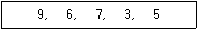
- 6, 3, 5, 7, 9
- 3, 5, 6, 7, 9
- 6, 7, 3, 5, 9
- 3, 5, 9, 6, 7
(정답률: 68%)
23. 다음 그래프에서 정점 A를 선택하여 깊이우선탐색(DFS)으로 운행한 결과는?
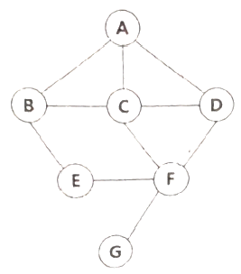
- ABECDFG
- ABECFDG
- ABCDEFG
- ABEFGCD
(정답률: 78%)
24. 다음 설명에 부합하는 용어로 옳은 것은?
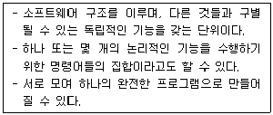
- 통합 프로그램
- 저장소
- 모듈
- 데이터
(정답률: 86%)
25. 테스트 드라이버(Test Driver)에 대한 설명으로 틀린 것은?
- 시험대상 모듈을 호출하는 간이 소프트웨어이다.
- 필요에 따라 매개 변수를 전달하고 모듈을 수행한 후의 결과를 보여줄 수 있다.
- 상향식 통합 테스트에서 사용된다.
- 테스트 대상 모듈이 호출하는 하위 모듈의 역할을 한다.
(정답률: 61%)
26. 다음 중 선형 구조로만 묶인 것은?
- 스택, 트리
- 큐, 데크
- 큐, 그래프
- 리스트, 그래프
(정답률: 80%)
27. 다음은 스택의 자료 삭제 알고리즘이다. ⓐ에 들어 갈 내용으로 옳은 것은? (단, Top: 스택포인터, S: 스택의 이름)
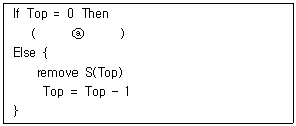
- Overflow
- Top = Top + 1
- Underflow
- Top = Top
(정답률: 69%)
28. 제품 소프트웨어의 사용자 매뉴얼 작성절차로 (가)~(다)와 [보기]의 기호를 바르게 연결한 것은?
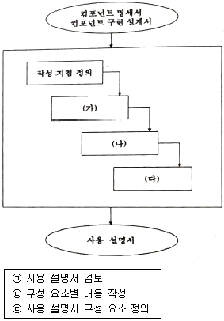
- (가)-㉠, (나)-㉡, (다)-㉢
- (가)-㉢, (나)-㉡, (다)-㉠
- (가)-㉠, (나)-㉢, (다)-㉡
- (가)-㉢, (나)-㉠, (다)-㉡
(정답률: 82%)
29. 순서가 A, B, C, D로 정해진 입력 자료를 스택에 입력한 후 출력한 결과로 불가능한 것은?
- D, C, B, A
- B, C, D, A
- C, B, A, D
- D, B, C, A
(정답률: 74%)
30. 소프트웨어 테스트에서 검증(Verification)과 확인 (Validation)에 대한 설명으로 틀린 것은?
- 소프트웨어 테스트에서 검증과 확인을 구별하면 찾고자 하는 결함 유형을 명확하게 하는 데 도움이 된다.
- 검증은 소프트웨어 개발 과정을 테스트하는 것이고, 확인은 소프트웨어 결과를 테스트 하는 것이다.
- 검증은 작업 제품이 요구 명세의 기능, 비기능 요구사항을 얼마나 잘 준수하는지 측정하는 작업이다.
- 검증은 작업 제품이 사용자의 요구에 적합한지 측정하며, 확인은 작업 제품이 개발자의 기대를 충족시키는지를 측정한다.
(정답률: 66%)
31. 개별 모듈을 시험하는 것으로 모듈이 정확하게 구현되었는지, 예정한 기능이 제대로 수행되는지를 점검하는 것이 주요 목적인 테스트는?
- 통합 테스트(Integration Test)
- 단위 테스트(Unit Test)
- 시스템 테스트(System Test)
- 인수 테스트(Acceptance Test)
(정답률: 76%)
32. 형상 관리의 개념과 절차에 대한 설명으로 틀린 것은?
- 형상 식별은 형상 관리 계획을 근거로 형상관리의 대상이 무엇인지 식별하는 과정이다.
- 형상 관리를 통해 가시성과 추적성을 보장함으로써 소프트웨어의 생산성과 품질을 높일 수 있다.
- 형상 통제 과정에서는 형상 목록의 변경 요구를 즉시 수용 및 반영해야 한다.
- 형상 감사는 형상 관리 계획대로 형상관리가 진행되고 있는지, 형상 항목의 변경이 요구 사항에 맞도록 제대로 이뤄졌는지 등을 살펴보는 활동이다.
(정답률: 81%)
33. 소스코드 정적 분석(Static Analysis)에 대한 설명으로 틀린 것은?
- 소스 코드를 실행시키지 않고 분석한다.
- 코드에 있는 오류나 잠재적인 오류를 찾아내기 위한 활동이다.
- 하드웨어적인 방법으로만 코드 분석이 가능하다.
- 자료 흐름이나 논리 흐름을 분석하여 비정상적인 패턴을 찾을 수 있다.
(정답률: 76%)
34. 소프트웨어 개발 활동을 수행함에 있어서 시스템이 고장(Failure)을 일으키게 하며, 오류(Error)가 있는 경우 발생하는 것은?
- Fault
- Testcase
- Mistake
- Inspection
(정답률: 79%)
35. 코드의 간결성을 유지하기 위해 사용되는 지침으로 틀린 것은?
- 공백을 이용하여 실행문 그룹과 주석을 명확히 구분한다.
- 복잡한 논리식과 산술식은 괄호와 들여쓰기(Indentation)를 통해 명확히 표현한다.
- 빈 줄을 사용하여 선언부와 구현부를 구별한다.
- 한 줄에 최대한 많은 문장을 코딩한다.
(정답률: 89%)
36. 소프트웨어 품질 목표 중 하나 이상의 하드웨어 환경에서 운용되기 위해 쉽게 수정될 수 있는 시스템 능력을 의미하는 것은?
- Portability
- Efficiency
- Usability
- Correctness
(정답률: 57%)
37. 다음 중 최악의 경우 검색 효율이 가장 나쁜트리 구조는?
- 이진 탐색트리
- AVL 트리
- 2-3 트리
- 레드-블랙 트리
(정답률: 65%)
38. 다음 트리에 대한 중위 순회 운행 결과는?
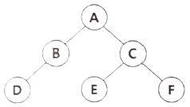
- ABDCEF
- ABCDEF
- DBECFA
- DBAECF
(정답률: 68%)
39. 테스트 케이스 자동 생성 도구를 이용하여 테스트 데이터를 찾아내는 방법이 아닌 것은?
- 스터브(Stub)와 드라이버(Driver)
- 입력 도메인 분석
- 랜덤(Random) 테스트
- 자료 흐름도
(정답률: 47%)
40. 저작권 관리 구성 요소 중 패키저(Packager)의 주요 역할로 옳은 것은?
- 콘텐츠를 제공하는 저작권자를 의미한다.
- 콘텐츠를 메타 데이터와 함께 배포 가능한 단위로 묶는다.
- 라이선스를 발급하고 관리한다.
- 배포된 콘텐츠의 이용 권한을 통제한다.
(정답률: 78%)
3과목: 데이터베이스 구축
41. 데이터베이스의 무결성 규정(Integrity Rule)과 관련한 설명으로 틀린 것은?
- 무결성 규정에는 데이터가 만족해야 될 제약 조건, 규정을 참조할 때 사용하는 식별자 등의 요소가 포함될 수 있다.
- 무결성 규정의 대상으로는 도메인, 키, 종속성 등이 있다.
- 정식으로 허가 받은 사용자가 아닌 불법적인 사용자에 의한 갱신으로부터 데이터베이스를 보호하기 위한 규정이다.
- 릴레이션 무결성 규정(Relation Integrity Rules)은 릴레이 션을 조작하는 과정에서의 의미적 관계(Semantic Relationship)을 명세한 것이다.
(정답률: 60%)
42. 데이터베이스에서 하나의 논리적 기능을 수행하기 위한 작업의 단위 또는 한꺼번에 모두 수행되어야 할 일련의 연산들을 의미하는 것은?
- 트랜잭션
- 뷰
- 튜플
- 카디널리티
(정답률: 81%)
43. 다음 두 릴레이션 Rl과 R2의 카티션 프로덕트(cartesian product) 수행 결과는?
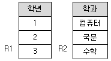
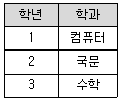
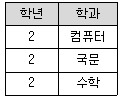
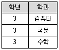
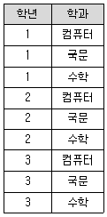
(정답률: 78%)
44. 물리적 데이터베이스 설계에 대한 설명으로 거리가 먼 것은?
- 물리적 설계의 목적은 효율적인 방법으로 데이터를 저장하는 것이다.
- 트랜잭션 처리량과 응답시간, 디스크 용량 등을 고려해야 한다.
- 저장 레코드의 형식, 순서, 접근 경로와 같은 정보를 사용하여 설계한다.
- 트랜잭션의 인터페이스를 설계하며, 데이터 타입 및 데이터 타입들 간의 관계로 표현한다.
(정답률: 67%)
45. 다음 중 기본키는 NULL 값을 가져서는 안되며, 릴레이션 내에 오직 하나의 값만 존재해야 한다는 조건을 무엇이라 하는가?
- 개체 무결성 제약조건
- 참조 무결성 제약조건
- 도메인 무결성 제약조건
- 속성 무결성 제약조건
(정답률: 80%)
46. SQL문에서 HAVING을 사용할 수 있는 절은?
- LIKE 절
- WHERE 절
- GROUP BY 절
- ORDER BY 절
(정답률: 77%)
47. 관계 데이터베이스에 있어서 관계 대수 연산이 아닌 것은?
- 디비전(Division)
- 프로젝트(Project)
- 조인(Join)
- 포크(Fork)
(정답률: 77%)
48. 학적 테이블에서 전화번호가 Null값이 아닌 학생명을 모두 검색할 때, SQL 구문으로 옳은 것은?
- SELECT FROM 07 WHERE 전화번호 DON'T NULL;
- SELECT FROM WHERE 전화번호 != NOT NULL;
- SELECT 학생명 FROM 학적 WHERE 전화번호 IS NOT NULL;
- SELECT FROM WHERE 전화번호 IS NULL;
(정답률: 84%)
49. 관계형 데이터베이스에서 다음 설명에 해당하는 키(Key)는?
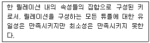
- 후보키
- 대체키
- 슈퍼키
- 외래키
(정답률: 73%)
50. 데이터베이스에서 인덱스(Index)와 관련한 설명으로 틀린 것은?
- 인덱스의 기본 목적은 검색 성능을 최적화하는 것으로 볼 수 있다.
- B-트리 인덱스는 분기를 목적으로 하는 Branch Block을 가지고 있다.
- BETWEEN 등 범위(Range) 검색에 활용될 수 있다.
- 시스템이 자동으로 생성하여 사용자가 변경할 수 없다.
(정답률: 80%)
51. 로킹 단위(Locking Granularity)에 대한 설명으로 옳은 것은?
- 로킹 단위가 크면 병행성 수준이 낮아진다.
- 로킹 단위가 크면 병행 제어 기법이 복잡해진다.
- 로킹 단위가 작으면 로크(lock)의 수가 적어진다.
- 로킹은 파일 단위로 이루어지며, 레코드와 필드는 로킹 단위가 될 수 없다.
(정답률: 65%)
52. 관계 대수에 대한 설명으로 틀린 것은?
- 원하는 릴레이션을 정의하는 방법을 제공하며 비절차적 언어이다.
- 릴레이션 조작을 위한 연산의 집합으로 피연산자와 결과가 모두 릴레이션이다.
- 일반 집합 연산과 순수 관계 연산으로 구분된다.
- 질의에 대한 해를 구하기 위해 수행해야 할 연산의 순서를 명시한다.
(정답률: 65%)
53. 데이터의 중복으로 인하여 관계연산을 처리할 때 예기치 못한 곤란한 현상이 발생하는 것을 무엇이라 하는가?
- 이상(Anomaly)
- 제한 (Restriction)
- 종속성(Dependency)
- 변환(Translation)
(정답률: 84%)
54. 다음 중 SQL에서의 DDL 문이 아닌 것은?
- CREATE
- DELETE
- ALTER
- DROP
(정답률: 76%)
55. 정규화에 대한 설명으로 적절하지 않은 것은?
- 데이터베이스의 개념적 설계 단계 이전에 수행한다.
- 데이터 구조의 안정성을 최대화한다.
- 중복을 배제하여 삽입, 삭제, 갱신 이상의 발생을 방지한다.
- 데이터 삽입 시 릴레이션을 재구성할 필요성을 줄인다.
(정답률: 74%)
56. 트랜잭션의 주요 특성 중 하나로 둘 이상의 트랜잭션이 동시에 병행 실행되는 경우 어느 하나의 트랜잭션 실행 중에 다른 트랜잭션의 연산이 끼어들 수 없음을 의미하는 것은?
- Log
- Consistency
- Isolation
- Durability
(정답률: 73%)
57. SQL의 논리 연산자가 아닌 것은?
- AND
- OTHER
- OR
- NOT
(정답률: 85%)
58. 동시성 제어를 위한 직렬화 기법으로 트랜잭션 간의 처리 순서를 미리 정하는 방법은?
- 로킹 기법
- 타임스탬프 기법
- 검증 기법
- 배타 로크 기법
(정답률: 74%)
59. 이전 단계의 정규형을 만족하면서 후보키를 통하지 않는 조인 종속(JD : Join Dependency) 제거해야 만족하는 정규형은?
- 제3정규형
- 제4정규형
- 제5정규형
- 제6정규형
(정답률: 65%)
60. 어떤 릴레이션 R에서 X와 Y를 각각 R의 애트리뷰트 집합의 부분 집합이라고 할 경우 애트리뷰트 X의 값 각각에 대해 시간에 관계없이 항상 애트리뷰트 Y의 값이 오직 하나만 연관되어 있을 때 Y는 X에 함수 종속이라고 한다. 이 함수 종속의 표기로 옳은 것은?
- Y → X
- Y ⊂ X
- X → Y
- X ⊂ Y
(정답률: 54%)
4과목: 프로그래밍 언어 활용
61. 모듈 내 구성 요소들이 서로 다른 기능을 같은 시간대에 함께 실행하는 경우의 응집도(Cohesion)는?
- Temporal Cohesion
- Logical Cohesion
- Coincidental Cohesion
- Sequential Cohesion
(정답률: 59%)
62. 오류 제어에 사용되는 자동반복 요청방식(ARQ)이 아닌 것은?
- Stop-and-wait ARQ
- Go-back-N ARQ
- Selective-Repeat ARQ
- Non-Acknowledge ARQ
(정답률: 64%)
63. 다음 파이썬(Python) 프로그램이 실행되었을 때의 결과는?
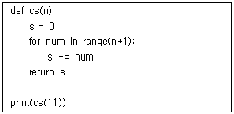
- 45
- 55
- 66
- 78
(정답률: 66%)
64. 다음 C언어 프로그램이 실행되었을 때의 결과는?
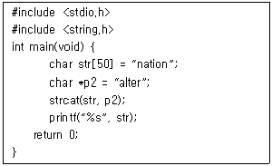
- nation
- nationalter
- alter
- alternation
(정답률: 75%)
65. JAVA에서 힙(Heap)에 남아있으나 변수가 가지고 있던 참조값을 잃거나 변수 자체가 없어짐으로써 더 이상 사용되지 않는 객체를 제거해주는 역할을 하는 모듈은?
- Heap Collector
- Garbage Collector
- Memory Collector
- Variable Collector
(정답률: 80%)
66. 다음 C언어 프로그램이 실행되었을 때의 결과는?
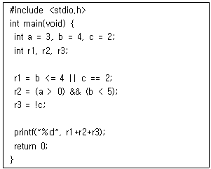
- 0
- 1
- 2
- 3
(정답률: 67%)
67. 다음 중 JAVA에서 우선순위가 가장 낮은 연산자는?
- --
- %
- &
- =
(정답률: 70%)
68. 사용자가 요청한 디스크 입·출력 내용이 다음과 같은 순서로 큐에 들어 있을 때 SSTF 스케쥴링을 사용한 경우의 처리 순서는? (단, 현재 헤드 위치는 53 이고, 제일 안쪽이 1번, 바깥쪽이 200번 트랙이다.)
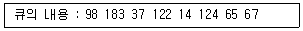
- 53-65-67-37-14-98-122-124-183
- 53-98-183-37-122-14-124-65-67
- 53-37-14-65-67-98-122-124-183
- 53-67-65-124-14-122-37-183-98
(정답률: 57%)
69. 192.168.1.0/24 네트워크를 FLSM 방식을 이용하여 4개의 Subnet으로 나누고 IP Subnet-zero를 적용했다. 이 때 Subnetting 된 네트워크 중 4번째 네트워크의 4번째 사용가능한 IP는 무엇인가?
- 192.168.1.192
- 192.168.1.195
- 192.168.1.196
- 192.168.1.198
(정답률: 53%)
70. C Class에 속하는 IP address는?
- 200.168.30.1
- 10.3.2.1 4
- 225.2.4.1
- 172.16.98.3
(정답률: 58%)
71. 다음 C언어 프로그램이 실행되었을 때의 결과는?
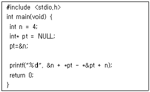
- 0
- 4
- 8
- 12
(정답률: 60%)
72. 귀도 반 로섬(Guido van Rossum)이 발표한 언어로 인터프리터 방식이자 객체지향적이며, 배우기 쉽고 이식성이 좋은 것이 특징인 스크립트 언어는?
- C++
- JAVA
- C#
- Python
(정답률: 77%)
73. 다음 JAVA 프로그램이 실행되었을 때의 결과를 쓰시오.
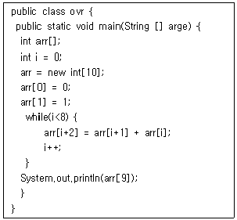
- 13
- 21
- 34
- 55
(정답률: 60%)
74. 프로세스와 관련한 설명으로 틀린 것은?
- 프로세스가 준비 상태에서 프로세서가 배당되어 실행 상태로 변화하는 것을 디스패치(Dispatch)라고 한다.
- 프로세스 제어 블록(PCB, Process Control Block)은 프로세스 식별자, 프로세스 상태 등의 정보로 구성된다.
- 이전 프로세스의 상태 레지스터 내용을 보관하고 다른 프로세스의 레지스터를 적재하는 과정을 문맥 교환(Context Switching)이라고 한다.
- 프로세스는 스레드(Thread) 내에서 실행되는 흐름의 단위이며, 스레드와 달리 주소 공간에 실행 스택(Stack)이 없다.
(정답률: 69%)
75. 모듈의 독립성을 높이기 위한 결합도(Coupling)와 관련한 설명으로 틀린 것은?
- 오류가 발생했을 때 전파되어 다른 오류의 원인이 되는 파문 효과(Ripple Effect)를 최소화해야 한다.
- 인터페이스가 정확히 설정되어 있지 않을 경우 불필요한 인터페이스가 나타나 모듈 사이의 의존도는 높아지고 결합도가 증가한다.
- 모듈들이 변수를 공유하여 사용하게 하거나 제어 정보를 교류하게 함으로써 결합도를 낮추어야 한다.
- 다른 모듈과 데이터 교류가 필요한 경우 전역변수(Global Variable)보다는 매개변수(Parameter)를 사용하는 것이 결합도를 낮추는 데 도움이 된다.
(정답률: 60%)
76. TCP헤더와 관련한 설명으로 틀린 것은?
- 순서번호(Sequence Number)는 전달하는 바이트마다 번호가 부여된다.
- 수신번호확인(Acknowledgement Number)은 상대편 호스트에서 받으려는 바이트의 번호를 정의한다.
- 체크섬(Checksum)은 데이터를 포함한 세그먼트의 오류를 검사한다.
- 윈도우 크기는 송수신 측의 버퍼 크기로 최대크기는 32767bit 이다.
(정답률: 69%)
77. 모듈화(Modularity)와 관련한 설명으로 틀린 것은?
- 소프트웨어의 모듈은 프로그래밍 언어에서 Subroutine, Function 등으로 표현될 수 있다.
- 모듈의 수가 증가하면 상대적으로 각 모듈의 크기가 커지며, 모듈 사이의 상호교류가 감소하여 과부하(Overload) 현상이 나타난다.
- 모듈화는 시스템을 지능적으로 관리할 수 있도록 해주며, 복잡도 문제를 해결하는 데 도움을 준다.
- 모듈화는 시스템의 유지보수와 수정을 용이하게 한다.
(정답률: 79%)
78. 다음 중 페이지 교체(Page Replacement)알고리즘이 아닌 것은?
- FIFO(First-In-First-Out)
- LUF(Least Used First)
- Optimal
- LRU(Least Recently Used)
(정답률: 46%)
79. C언어에서의 변수 선언으로 틀린 것은?
- int else;
- int Test2;
- int pc;
- int True;
(정답률: 71%)
80. 파일 디스크립터(File Descriptor)에 대한 설명으로 틀린 것은?
- 파일 관리를 위해 시스템이 필요로 하는 정보를 가지고 있다.
- 보조기억장치에 저장되어 있다가 파일이 개방(open)되면 주기억장치로 이동된다.
- 사용자가 파일 디스크립터를 직접 참조할 수 있다.
- 파일 제어 블록(File Control Block)이라고도 한다.
(정답률: 72%)
5과목: 정보시스템 구축관리
81. 침입탐지 시스템(IDS : Intrusion Detection System)과 관련한 설명으로 틀린 것은?
- 이상 탐지 기법(Anomaly Detection)은 Signature Base나 Knowledge Base라고도 불리며 이미 발견되고 정립된 공격 패턴을 입력해두었다가 탐지 및 차단한다.
- HIDS(Host-Based Intrusion Detection)는 운영체제에 설정된 사용자 계정에 따라 어떤 사용자가 어떤 접근을 시도하고 어떤 작업을 했는지에 대한 기록을 남기고 추적한다.
- NIDS(Network-Based Intrusion Detection System)로는 대표적으로 Snort가 있다.
- 외부 인터넷에 서비스를 제공하는 서버가 위치하는 네트워크인 DMZ(Demilitarized Zone)에는 IDS가 설치될 수 있다.
(정답률: 43%)
82. 정보 시스템 내에서 어떤 주체가 특정 개체에 접근하려 할 때 양쪽의 보안 레이블(Security Label)에 기초하여 높은 보안 수준을 요구하는 정보(객체)가 낮은 보안 수준의 주체에게 노출되지 않도록 하는 접근 제어 방법은?
- Mandatory Access Control
- User Access Control
- Discretionary Access Control
- Data-Label Access Control
(정답률: 45%)
83. 구글의 구글 브레인 팀이 제작하여 공개한 기계 학습(Machine Leaming)을 위한 오픈소스 소프트웨어 라이브러리는?
- 타조(Tajo)
- 원 세그(One Seg)
- 포스퀘어(Foursquare)
- 텐서플로(TensorFlow)
(정답률: 71%)
84. 국내 IT 서비스 경쟁력 강화를 목표로 개발되었으며 인프라 제어 및 관리 환경, 실행 환경, 개발 환경, 서비스 환경, 운영환경으로 구성되어 있는 개방형 클라우드 컴퓨팅 플랫폼은?
- N20S
- PaaS-TA
- KAWS
- Metaverse
(정답률: 60%)
85. 정보 보안을 위한 접근 제어(Access Control)과 관련한 설명으로 틀린 것은?
- 적절한 권한을 가진 인가자만 특정 시스템이나 정보에 접근할 수 있도록 통제하는 것이다.
- 시스템 및 네트워크에 대한 접근 제어의 가장 기본적인 수단은 IP와 서비스 포트로 볼 수 있다.
- DBMS에 보안 정책을 적용하는 도구인 XDMCP를 통해 데이터베이스에 대한 접근제어를 수행할 수 있다.
- 네트워크 장비에서 수행하는 IP에 대한 접근 제어로는 관리 인터페이스의 접근제어와 ACL(Access Control List) 등 있다.
(정답률: 58%)
86. 소프트웨어 개발 프레임워크와 관련한 설명으로 틀린 것은?
- 반제품 상태의 제품을 토대로 도메인별로 필요한 서비스 컴포넌트를 사용하여 재사용성 확대와 성능을 보장 받을 수 있게하는 개발 소프트웨어이다.
- 개발해야 할 애플리케이션의 일부분이 이미구현되어 있어 동일한 로직 반복을 줄일 수있다.
- 라이브러리와 달리 사용자 코드가 직접호출하여 사용하기 때문에 소프트웨어 개발프레임워크가 직접 코드의 흐름을 제어할수 없다.
- 생산성 향상과 유지보수성 향상 등의장점이 있다.
(정답률: 82%)
87. 물리적 배치와 상관없이 논리적으로 LAN을구성하여 Broadcast Domain을 구분할 수있게 해주는 기술로 접속된 장비들의 성능향상 및 보안성 증대 효과가 있는 것은?
- VLAN
- STP
- L2AN
- ARP
(정답률: 68%)
88. SQL Injection 공격과 관련한 설명으로 틀린것은?
- SQL Injection은 임의로 작성한 SQL 구문을 애플리케이션에 삽입하는 공격방식이다.
- SQL Injection 취약점이 발생하는 곳은 주로웹 애플리케이션과 데이터베이스가 연동되는 부분이다.
- DBMS의 종류와 관계없이 SQL Injection공격 기법은 모두 동일하다.
- 로그인과 같이 웹에서 사용자의 입력 값을 받아 데이터베이스 SQL문으로 데이터를요청하는 경우 SQL Injection을 수행할 수 있다.
(정답률: 80%)
89. 비대칭 암호화 방식으로 소수를 활용한암호화 알고리즘은?
- DES
- AES
- SMT
- RSA
(정답률: 67%)
90. 다음에서 설명하는 IT 스토리지 기술은?
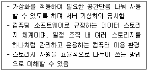
- Software Defined Storage
- Distribution Oriented Storage
- Network Architected Storage
- Systematic Network Storage
(정답률: 47%)
91. Cocomo model 중 기관 내부에서 개발된 중소규모의 소프트웨어로 일괄 자료 처리나 과학기술계산용, 비즈니스 자료 처리용으로 5만 라인이하의 소프트웨어를 개발하는 유형은?
- Embeded
- Organic
- Semi-detached
- Semi-embeded
(정답률: 69%)
92. 다음 내용이 설명하는 것은?
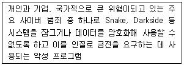
- Format String
- Ransomware
- Buffer overflow
- Adware
(정답률: 86%)
93. 생명주기 모형 중 가장 오래된 모형으로 많은적용 사례가 있지만 요구사항의 변경이어렵고 각 단계의 결과가 확인 되어야 다음단계로 넘어갈 수 있는 선형 순차적, 고전적생명 주기 모형이라고도 하는 것은?
- Waterfall Model
- Prototype Model
- Cocomo Model
- Spiral Model
(정답률: 82%)
94. 소프트웨어 생명주기 모형 중 Spiral Model에 대한 설명으로 틀린 것은?
- 비교적 대규모 시스템에 적합하다.
- 개발 순서는 계획 및 정의, 위험 분석, 공학적 개발, 고객 평가 순으로 진행된다.
- 소프트웨어를 개발하면서 발생할 수 있는 위험을 관리하고 최소화하는 것을 목적으로 한다.
- 계획, 설계, 개발, 평가의 개발 주기가 한번만 수행된다.
(정답률: 79%)
95. 특정 사이트에 매우 많은 ICMP Echo를 보내면, 이에 대한 응답(Respond)을 하기 위해 시스템 자원을 모두 사용해버려 시스템이 정상적으로 동작하지 못하도록 하는 공격방법은?
- Role-Based Access Control
- Ping Flood
- Brute-Force
- Trojan Horses
(정답률: 77%)
96. TCP/IP 기반 네트워크에서 동작하는 발행-구독 기반의 메시징 프로토콜로 최근 IoT 환경에서 자주 사용되고 있는 프로토콜은?
- MLFQ
- MQTT
- Zigbee
- MTSP
(정답률: 62%)
97. 시스템이 몇 대가 되어도 하나의 시스템에서 인증에 성공하면 다른 시스템에 대한 접근권한도 얻는 시스템을 의미하는 것은?
- SOS
- SBO
- SSO
- SOA
(정답률: 67%)
98. 시스템에 저장되는 패스워드들은 Hash 또는 암호화 알고리즘의 결과 값으로 저장된다. 이때 암호공격을 막기 위해 똑같은 패스워드들이 다른 암호 값으로 저장되도록 추가되는 값을 의미하는 것은?
- Pass flag
- Bucket
- Opcode
- Salt
(정답률: 55%)
99. S/W 각 기능의 원시 코드 라인수의 비관치, 낙관치, 기대치를 측정하여 예측치를 구하고 이를 이용하여 비용을 산정하는 기법은?
- Effort Per Task기법
- 전문가 감정 기법
- 델파이기법
- LOC기법
(정답률: 66%)
100. 오픈소스 웹 애플리케이션 보안 프로젝트로서 주로 웹을 통한 정보 유출, 악성 파일 및 스크립트, 보안 취약점 등을 연구하는 곳은?
- WWW
- OWASP
- WBSEC
- ITU
(정답률: 64%)